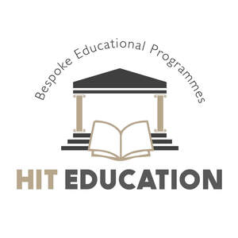

Trade Mark Journal No.2025/050 12 December 2025
UK00004303921 2 December 2025 (41)

- Class 41
- Bespoke educational programmes ; Education; Vocational education; Health education; Pre-school education; Education and training; Academies [education]; Education and instruction; Services of schools [education]; Education services; University education services; Education, teaching and training; Academy services (Education -); Education academy services; Academy education services; Vocational education and training services; Religious education; Education (Religious -); Music education; Training and education services; Education and training services; Education and instruction services; Education examination; Kindergarten services [education or entertainment]; Provision of education courses; Educational services for providing courses of education; Career counseling [education]; Teaching of diet education; Higher education services; Provision of training and education; Provision of education and training; Providing of education; Physical education; Education academy services for teaching languages; Entertainment, education and instruction services; Education academy services for teaching art history; Information (Education -); Medical education services; Education services relating to vocational training; Computer education training; Education information; Primary education services; Adult education services; Residential education courses; Computer education training services; Linguistic education and training services; Boarding school education; Education and training consultancy; Primary education services relating to literacy; Further education; Physical education instruction; Sports education services; Vocational education relating to home safety; Vocational education relating to self-defence; Education academy services for teaching acting; Musical education services; Physical education services; Physical health education; Legal education services; Technological education services; Providing continuing medical education courses; Online education services; Lingual education; Provision of physical education; Management of education services; Management education services; Education services related to the arts; Education services relating to health; Education services relating to nutrition; Education academy services for teaching construction drafting; Singing education; Dietary education services; Providing continuing dental education courses; Career counselling relating to education and training; Education services relating to religion; Education courses relating to automation; Vocational education in the field of mechanics; Educational services provided by institutes of higher education; Club education services; Education and training in the field of music and entertainment; Vocational education relating to personal safety; Education and training services in the field of occupational health and safety; Adult education services relating to medicine; Research in the field of education; Providing continuing nursing education courses; Adult education services relating to finance; Education and training in the field of occupational health and safety; Guidance (Vocational -) [education or training advice]; Vocational guidance [education or training advice]; Education information services; Education services for imparting language teaching methods; Secondary school educational services; Sporting education services; Education services relating to medicine; Education, entertainment and sport services; Education services relating to business training; Education courses relating to the travel industry; Educational and teaching services; Training or education services in the field of life coaching; Providing continuing legal education courses; Education services relating to the veterinary profession; Career counselling [training and education advice]; Adult education services relating to law; Vocational education relating to first aid; Education in the field of computing; Blindness prevention education services; Vocational education for young people; Provision of education courses relating to electronics; Education, entertainment and sports; Education services relating to yoga; Education services relating to conservation; Adult education services relating to commerce; Education services in the nature of courses at the university level; Education services relating to music; Education in the field of occupational health and safety; Career advisory services (education or training advice); Adult education services relating to banking; Provision of education courses relating to telecommunications; Education in the field of computing science; Education services relating to commerce; English language education services; Education services relating to industry; Adult education services relating to pharmacy; Education services relating to hygiene; Provision of facilities for education; Provision of education courses relating to computers; Residential education courses relating to archery; Educational services provided by institutes of further education; Organization of education competitions; Adult education services relating to management; Education services relating to the cinema; Education in movement awareness; Education services relating to fashion; Education services relating to sports; Education services relating to photography; Organization of competitions [education or entertainment]; Competitions (Organization of -) [education or entertainment]; Organization of competitions for education or entertainment; Education services relating to pharmacy; Education services relating to banking; Adult education services relating to auditing; Education and training in the field of business management; Educational and training services relating to healthcare; Education services relating to food technology; Education services relating to conservation of the environment; Providing education courses relating to the travel industry; Foreign language education services; Education and training in the field of automotive engineering; Training and further training consultancy; Coaching [training]; Training courses; Vocational training; Training and instruction; Personnel training; Training consultancy; Training in yoga; Employment training; Training services; Vocational skills training; Meditation training; Organisation of training seminars; Educating at senior high schools; Teaching at junior high schools; Teaching at elementary schools; Educating at universities or colleges; Officiating at sports contests; Educating at university or colleges; Tutoring at cram schools; Training; Organisation of training courses; Organisation of training; Advanced training; Practical training; Training in catering; Training of teachers; Providing of training; Providing training; Providing courses of training; Medical training and teaching; Conducting training seminars; Sports training; Training in sports; Training in philosophy; Wood-working training; Fitness training services; Instruction in weight training; Provision of training courses; Training courses (Provision of -); Instructional and training services; Provision of training; Career and vocational training; Business training; Continuous training; Horses (Training of -); Conducting workshops [training]; Training in administration; Horse training; Vocational training services; Life coaching (training); Personal coaching [training]; Language training; Postgraduate training courses; Motorcycle training; Computerised training; Exercise [fitness] training services; Fitness and exercise training services; Training of referees; Arranging of training courses; Aerobics training services; Adult training; Vocational training courses (Provision of -); Teacher training services; Workshops for training purposes; Residential training courses; Training of umpires; Vocational skills training (Provision of -); Computer training; Industrial training; Training services for personnel; Training in business skills; Animal training; Training (Animal -); Practical training services; Educational and training services; Instruction in circuit training; Personal trainer services [fitness training]; Religious training; Written training courses; Physical training services; Training in electronics; Training in the use of computers; Strength and conditioning training; Training of swimming teachers; Courses (Training -) relating to management; Arranging professional workshop and training courses; Management training services; Voice training; Training services for nurses; Training of croupiers; Consultancy relating to vocational skills training; Driver training; Training in communication techniques; Training of financial personnel; Providing obstacle course training gym facilities; Training in dog handling; Physical fitness training services; Staff training services; Training of animals; Training in the field of design; Computerised training in career counselling; Arrangement of training courses in teaching institutes; Training of magicians; Training of sports teachers; Personal development training; Providing online training seminars; Rental of training simulators; Conducting training seminars for clients; Providing of continuous training courses; Engineering training services; Provision of training courses in personal development; Recreation and training services; Providing of training, teaching and tuition; Training of toast-masters; Organisation of seminars relating to training; Health and fitness training; Training in the use of cranes; Courses (Training -) relating to medicine; Training services for nannies; Training (Practical -) [demonstration]; Practical training [demonstration]; Consultancy relating to physical fitness training; Training related to nutrition; Practical training in the field of welding; Tuition in animal training; Arranging and conducting of training courses; Courses (Training -) relating to engineering; Conducting training sessions on physical fitness online; Training in the field of medicine; Training services relating to fitness.
HIT Education Limited